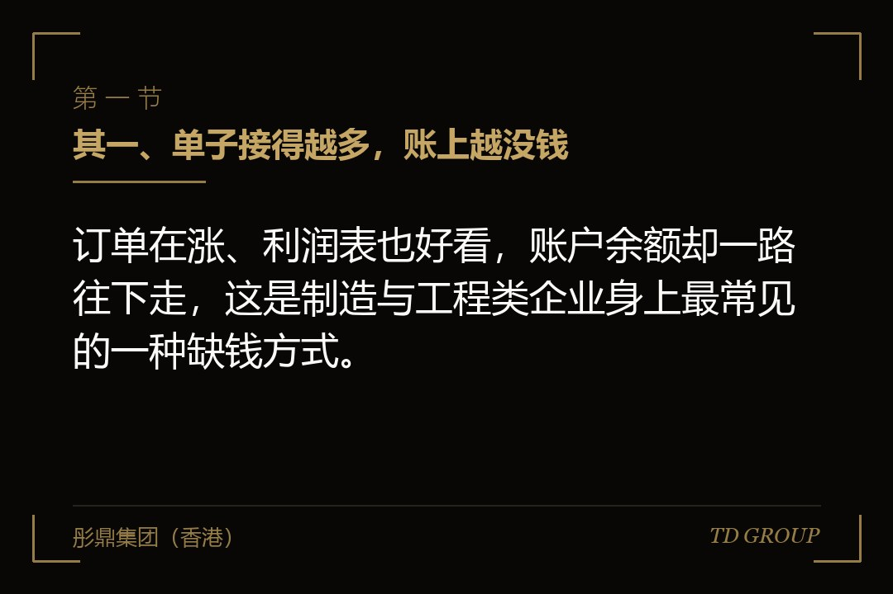
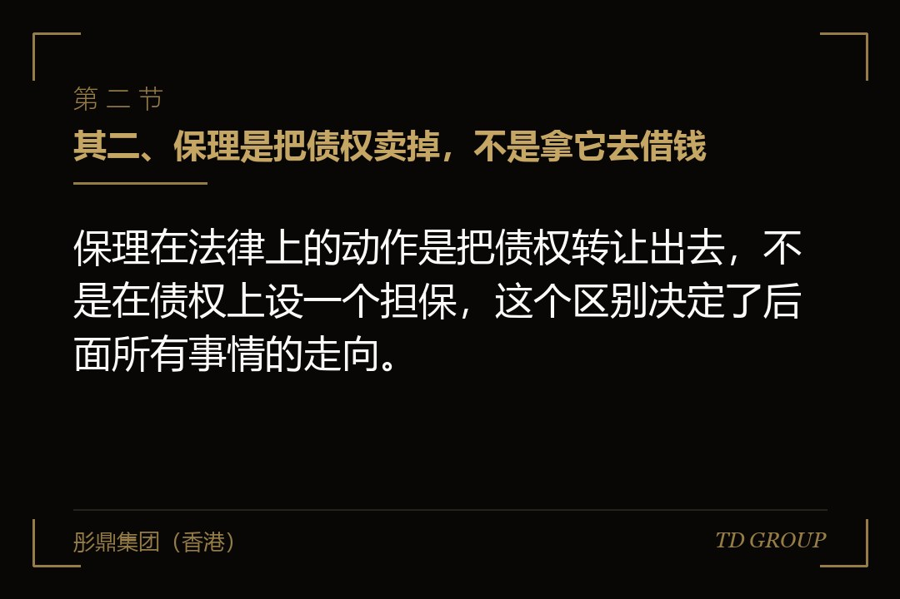
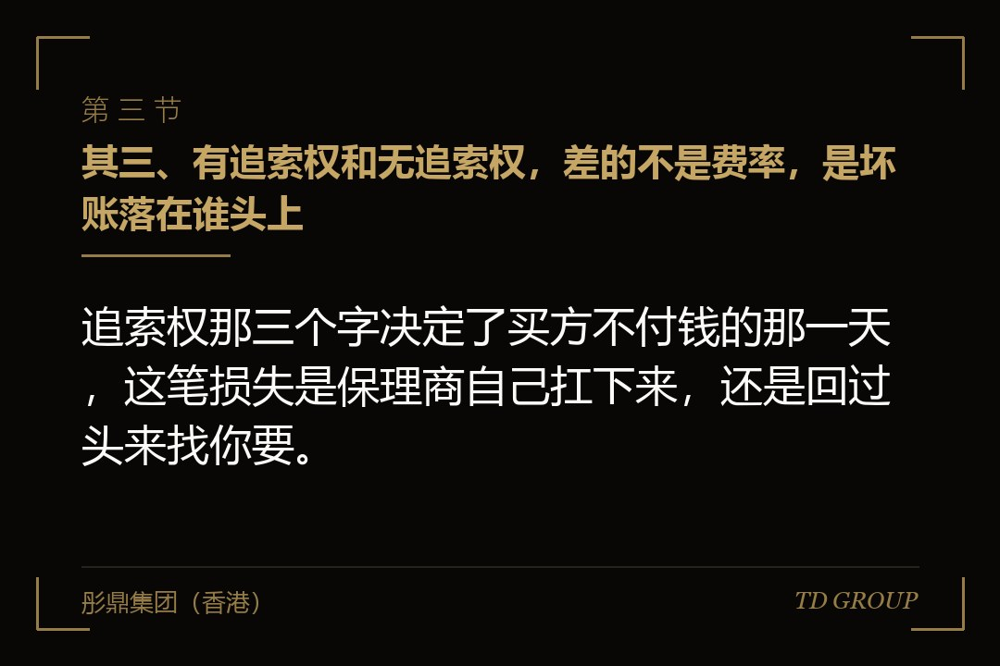

其一、单子接得越多，账上越没钱

结论先行：订单在涨、利润表也好看，账户余额却一路往下走，这是制造与工程类企业身上最常见的一种缺钱方式。
假设有家做非标设备的企业，年营收三亿八千万，账面净利两千多万。它的客户是几家大型集团的下属工厂，付款条件很统一：验收后六个月，且以承兑汇票结算。上游的钢材和电气件供应商则要求款到发货，最多给三十天。
于是这门生意的形状是这样的：每接一单，先垫材料款和人工，六到九个月之后才收得回钱。年底一算，账上挂着四千多万应收，利润表上写着赚了两千万，而基本户里只有三百来万，工资和社保下个月就要发。
老板去银行，银行给的授信要看抵押物，厂房已经抵过一轮，额度用满了。他去谈股权融资，投资人报的价格他不接受——生意在赚钱，为了周转让出十几个点，他觉得亏。
一家保理商找上门，条件听起来很直接：把对其中两家大客户的应收账款转过来，一周之内放一笔款出去，费率按月计，不用抵押、不动股权。他签了。
先把边界划清楚。应收账款为什么会越滚越大、账期怎么谈、客户集中度在尽调里怎么被追问，各自都有专门的讨论，本文不展开。这里只讲一件事：把这笔应收换成现金，代价具体落在哪几个地方。
其二、保理是把债权卖掉，不是拿它去借钱

结论先行：保理在法律上的动作是把债权转让出去，不是在债权上设一个担保，这个区别决定了后面所有事情的走向。
民法典合同编在典型合同部分专门设了保理合同一章，第七百六十一条把它定义为：应收账款债权人将现有的或者将有的应收账款转让给保理人，保理人提供资金融通、应收账款管理或者催收、应收账款债务人付款担保等服务的合同。
注意「转让」两个字。签完之后，向买方收钱的那个权利在法律上已经不在你手里了，它属于保理商。这跟把应收账款拿去做质押是两件事——质押里债权还是你的，只是上面压了一个担保权。
应收账款质押走的是另一套程序，需要在人民银行征信中心的动产融资统一登记公示系统办理登记，登记之后才能对抗善意第三人。保理虽然不以登记为生效要件，但实务中保理商同样会去做登记，目的是防止同一笔应收被重复转让。
票据贴现又是第三条路。它转让的是票据权利，走的是票据法那一套规则，与保理的债权转让在追索方式上完全不同，这一点留到后面单说。
三条路的共同点是它们都不动股东名册，区别在于交出去的那样东西是什么，以及出了问题之后谁去追买方。关键在于，先分清自己签的是哪一种。
其三、有追索权和无追索权，差的不是费率，是坏账落在谁头上

结论先行：追索权那三个字决定了买方不付钱的那一天，这笔损失是保理商自己扛下来，还是回过头来找你要。
民法典第七百六十六条规定，当事人约定有追索权保理的，保理人可以向应收账款债权人主张返还保理融资款本息或者回购应收账款债权，也可以向应收账款债务人主张应收账款债权；保理人向债务人主张后，扣除融资款本息和相关费用有剩余的，剩余部分应当返还给债权人。
第七百六十七条规定的是另一头：当事人约定无追索权保理的，保理人应当向应收账款债务人主张应收账款债权，保理人取得的超过保理融资款本息和相关费用的部分，无需向应收账款债权人返还。
把这两条翻成大白话。有追索权，等于你把债权交出去换了一笔钱，但买方赖账时保理商可以回头找你，你要么还钱要么把债权买回来——风险其实还在你身上。无追索权，等于把这笔坏账风险真的卖掉了，代价是买方超额付款的那部分好处也不归你。
市面上绝大多数中小企业能拿到的是有追索权保理。原因不复杂：保理商也不想承担买方的信用风险，除非买方本身是信用极好的大型主体，或者另有保险安排。
所以看一份保理合同，先翻到追索权那一条，再去看费率。费率差一两个点是钱的问题，追索权写反了是性质的问题。本质上，有追索权保理更接近一笔以应收账款作保障的短期借款，只是名字不叫借款。
其四、你以为它出表了，审计师会把它调回来
结论先行：有追索权保理通常达不到金融资产终止确认的条件，报表上那笔应收不会消失，还会多出一笔负债。
会计上判断一项金融资产能不能从报表里移出去，看的是与所有权相关的风险和报酬是否实质上已经转移。有追索权保理里，买方不付钱你还得还，风险显然没转走。
结果就是：账上那四千万应收照样挂着，同时多出一笔与融资款等额的负债。老板原本想的是「把应收变成现金，报表也顺带好看一点」，实际拿到的是现金增加、负债同步增加，资产负债率不降反升。
无追索权保理才有出表的空间，但也不是签了名字就自动成立，仍要看合同里有没有回购承诺、有没有保证金安排、有没有变相的兜底条款。实质重于形式，判断权在审计师那里。
这件事在两个时点会被翻出来。头一个是年度审计，事务所要求补充说明保理安排的性质并作相应调整；第二个是下一轮融资或者申报上市的尽调，中介会把全部保理合同调出来逐份看追索权条款。
而调整往往是追溯的。前两年按出表处理的报表要重述，资产负债率、流动比率、有息负债规模跟着变，如果这几个数正好是某笔银行授信的约束条件，连锁反应就来了。因此，这条路走之前先跟审计师对一次口径，比事后解释便宜得多。
其五、暗保理最容易踩的那一脚：货款打回你账上，你顺手用了
结论先行：买方不知情的那种保理安排里，货款仍然会打进你的账户，而那笔钱从签约那天起就已经不属于你了。
保理分明保理和暗保理。明保理会通知买方，此后买方直接向保理商付款；暗保理不通知，买方照旧把钱打给你，你收到后再转给保理商。很多企业选暗保理，理由是不想让大客户知道自己在做应收融资。
民法典第七百六十四条对通知本身提了要求：保理人向应收账款债务人发出应收账款转让通知的，应当表明保理人身份并附有必要凭证。这条是在防止有人冒用保理人名义去收款。
而债权转让的一般规则是，未通知债务人的，该转让对债务人不发生效力。所以暗保理下买方把钱付给你，在他那一侧是清偿完毕的，责任不在他——但那笔钱在你和保理商之间早已约定归保理商所有。
真正出事的路径几乎都一样：那天正好要发工资、要付一笔急着要的材料款，老板看到账上突然进了一笔钱，就先用了，想着下个月补上。下个月又有下个月的事。
这个动作的性质不再是资金周转紧张。保理商会认定为挪用回款并触发回购或者提前到期条款，合同里通常还配有违约金；情节严重的，还可能引出更麻烦的定性。
所以做暗保理，账户管理要在制度上先做好：回款单独设一个户、收到即转、每笔留凭证，不让这笔钱和经营资金混在一起。关键在于，别让「顺手用一下」成为一个可能发生的选项。
其六、虚构一笔应收去做融资，牵连的不只是你
结论先行：跟熟客户配合开一笔并不存在的单子去套融资，法律把付款的风险直接压在了那个替你签字的买方身上。
民法典第七百六十三条写得很清楚：应收账款债权人与债务人虚构应收账款作为转让标的，与保理人订立保理合同的，应收账款债务人不得以应收账款不存在为由对抗保理人，但是保理人明知虚构的除外。
这条的意思是，只要保理商不知情，那个帮你走个流程、签了确认函的买方，就得按那笔虚构的应收向保理商付款。他事后再回头找你，那是你们两家之间的事。
很多老板对这一条没有概念。他以为最坏的结果是保理商发现了、合同作废、把钱还回去；实际情况是保理商可以直接向买方主张，而买方一旦被判付款，你失去的不只是这笔融资，还有那个客户和整条业务关系。
配合确权这件事本身也在变得越来越难做。保理商在放款前普遍会做买方确权，核对合同、发货单、验收单、发票和纳税记录，有的还会电话或者上门核实。链条上任何一环对不上，都会被要求补充说明。
而这类操作留下的痕迹是不会自己消失的。虚开的发票在税务系统里、假的确认函在保理商的档案里，等到几年后融资尽调或者申报上市把报告期往前拉，它们会同时出现在同一张问题清单上。
其七、票据这条路：背书转出去了，你还在追索链上
结论先行：把收到的商业承兑汇票背书给供应商付了货款，不等于这笔风险就此离开你，票据法把你留在了追索链条里。
先分清两种票。银行承兑汇票由银行承担到期付款责任，信用基础是银行；商业承兑汇票由企业自己承兑，信用基础就是那家企业本身，二者的可贴现性和折价幅度差得很远。
企业常见的做法是把收到的票背书给上游供应商抵货款。这在现金紧张时非常好用，但票据法的规则是：持票人到期不获付款时，可以对背书人、出票人、承兑人以及其他票据债务人行使追索权。
也就是说，那张票你签过名，你就是链条上的一环。承兑人到期付不出钱，最后拿着票来找你的可能是你的供应商，而那时候你早已把设备交付、把这单的账结完了。
贴现是另一条路：把票拿到银行或者其他机构提前换成现金，代价是贴息。商业承兑汇票能不能贴、贴多少，取决于承兑人的信用，中小企业开出的商票在市场上往往很难有好价钱。
所以票据要不要收、收哪一种、收了之后是持有到期、背书还是贴现，是合同谈判阶段就该定下来的事。等票已经在手上再来想办法，选择余地只剩下折价高低。
其八、这条路什么时候该走，什么时候不该走
结论先行：应收账款融资适合拿来补一段时间确定、去向确定的资金缺口，不适合用来填一个还没找到原因的窟窿。
该走的情形有几个共同特征：买方是信用良好的大型主体、账期明确且历史回款记录干净、这笔资金要投的用途有确定的回收时间、算下来的资金成本低于这单生意的毛利空间。满足这几条，它是一条比稀释股权更划算的路。
不该走的情形同样明显：拿来发工资和还上一笔到期借款、买方本身付款就不稳定、企业已经在多家机构做过应收融资而彼此并不知情、或者只是因为银行贷不到款所以换一个名字继续借。
这里有个容易被忽略的成本：应收账款是一次性资源。同一笔债权转让给保理商之后，它就不能再拿去做质押、也不能再作为银行授信的支撑。你等于把未来的融资空间提前用掉了一部分。
投资人在尽调时一定会问到这一头。他们要看的是：有多少应收已经转让或者质押、追索权怎么约定、有没有出表处理、报告期内有没有回款挪用的记录。这几个问题的答案会直接影响估值和交易条件。
现在就能做的有这么几件：把手上全部保理与票据合同调出来，逐份确认追索权条款和回购触发条件；跟审计师核一次会计处理口径；给回款设独立账户并留下每笔的划转凭证；把已转让或已质押的应收单独列一张台账，别等尽调时才拼。
我们跟华尔街俱乐部有合作，这类靠应收融资撑着周转的企业见得多一些，真正在下一轮融资时被卡住的，问题往往不在于用了这个工具，而在于用的时候没人算过它对报表和后续融资空间的那一笔账。
最后留一个问题。假设你就是开头那家非标设备企业的老板，账上四千多万应收、下个月工资还差一截，保理商给的是有追索权、按月计费的方案：你是先把这笔钱拿了缓过这一关，还是先花一个月把账期和结算方式跟那两家大客户重新谈一遍？